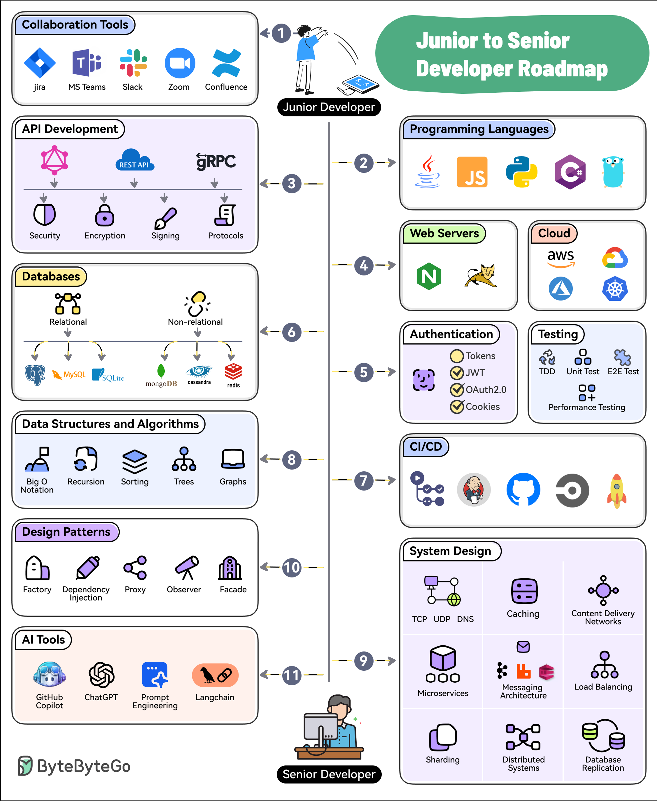

Software development is a social activity. Learn to use collaboration tools like Jira, Confluence, Slack, MS Teams, Zoom, etc.
Pick and master one or two programming languages. Choose from options like Java, Python, JavaScript, C#, Go, etc.
Learn the ins and outs of API Development approaches such as REST, GraphQL, and gRPC.
Know about web servers as well as cloud platforms like AWS, Azure, GCP, and Kubernetes
Learn how to secure your applications with authentication techniques such as JWTs, OAuth2, etc. Also, master testing techniques like TDD, E2E Testing, and Performance Testing
Learn to work with relational (Postgres, MySQL, and SQLite) and non-relational databases (MongoDB, Cassandra, and Redis).
Pick tools like GitHub Actions, Jenkins, or CircleCI to learn about continuous integration and continuous delivery.
Master the basics of DSA with topics like Big O Notation, Sorting, Trees, and Graphs.
Learn System Design concepts such as Networking, Caching, CDNs, Microservices, Messaging, Load Balancing, Replication, Distributed Systems, etc.
Master the application of design patterns such as dependency injection, factory, proxy, observers, and facade.
To future-proof your career, learn to leverage AI tools like GitHub Copilot, ChatGPT, Langchain, and Prompt Engineering.